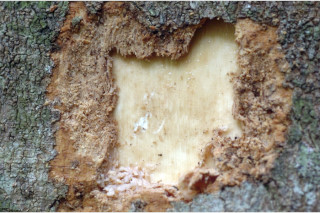
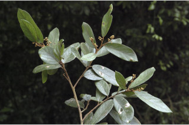
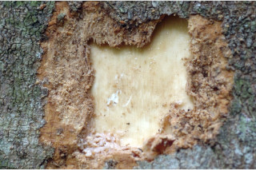
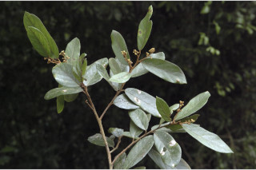

Images :

 





| Habit : | Trees up to 15 m tall. |
| Leaves : | Leaves simple , alternate , spiral ; petiole 0.5-0.7 cm long, planoconvex in cross section, tomentose ; lamina 6-14 x 3-6 cm, elliptic-oblong to elliptic-ovate , apex rounded-obtuse or shortly acuminate , base rounded to acute , tomentose beneath at least on the nerves beneath, glaucous beneath; midrib canaliculate ; secondary_nerves ca. 7 pairs; tertiary_nerves distantly percurrent . |
| Inflorescence / Flower : | Flowers in short congested axillary or terminal tawny-tomentose panicles . |
| Fruit and Seed : | Drupe , ovoid-ellipsoid , black; 1-seeded . |